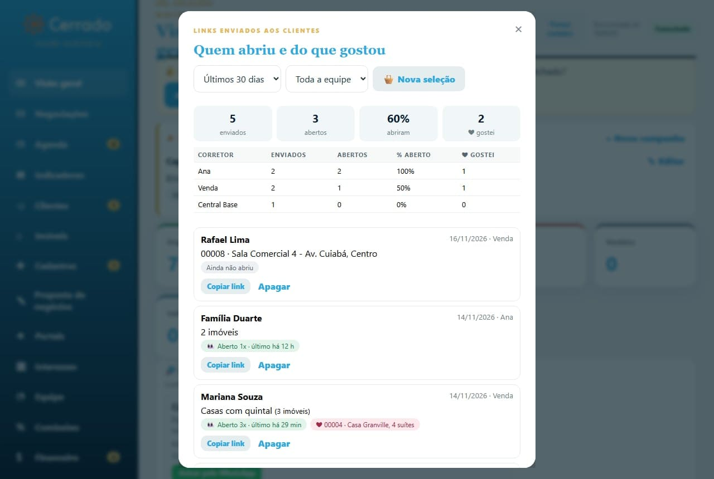
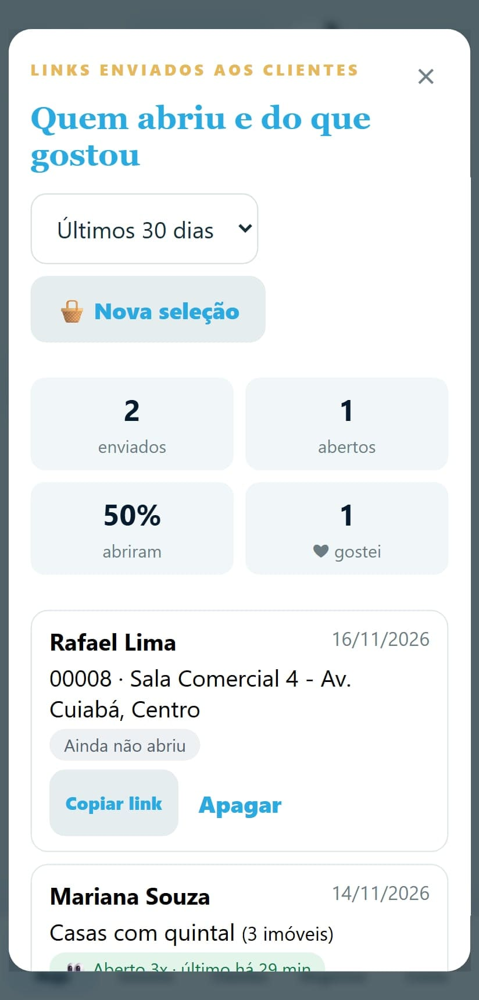

PROCEDIMENTO OPERACIONAL PADRÃO
Acompanhar os links enviados: quem abriu e do que gostou
SKL Gestão Imobiliária · Imóveis → 📨 Links enviados · Conta → Links enviados aos clientes · 🔔 Avisos
- Objetivo
- Saber se o cliente abriu o link, quantas vezes, de quais imóveis gostou, e acompanhar a equipe pelo ranking de envios.
- Aplicação
- Follow-up de clientes depois do envio de imóveis; conversa de gestão sobre o atendimento da equipe.
- Responsáveis
- Cada corretor vê os próprios links. Central, gestor e administrador veem também os da equipe e o ranking.
- Pré-requisitos
- Links enviados pelo “Enviar ao cliente” ou pela “Seleção para cliente” (POP-GI-38). Para receber o aviso com o app fechado, ative os avisos no aparelho (🔔 → Ativar avisos neste aparelho).
- Resultado esperado
- Aviso no 🔔 na hora em que o cliente abre ou gosta, e uma lista com a situação de cada link.
1. Procedimento
- Avisos: quando o cliente abre o link pela primeira vez, chega “👀 Fulano abriu o link”; se ele voltar depois de 12 horas, “abriu o link de novo”; ao tocar em ♡, “❤️ Fulano gostou de um imóvel” com o código. Tocar no aviso abre a lista de links com aquele link destacado.
- Para ver todos os links, toque em 📨 Links enviados na tela Imóveis (no celular do corretor: Conta → Links enviados aos clientes).
- No topo, os números do período: enviados, abertos, % que abriram e ❤ gostei. Escolha o período (30 dias, 90 dias, ano, tudo).
- Cada link mostra o cliente, a data, os imóveis, “👀 Aberto Nx · último há …” ou “Ainda não abriu” e os imóveis com ❤.
- Copiar link copia o mesmo link de novo (as aberturas continuam contando). Apagar desliga o link: o cliente não consegue mais abrir.
- Central e gestor: escolha Toda a equipe para ver os links de todos e o ranking por corretor (enviados, abertos, % aberto e ❤).

Central: toda a equipe, com o ranking por corretor.
Avisos no 🔔: abriu e gostou.

No celular do corretor: os próprios links.
2. Pontos de atenção
Use o aviso para ligar na hora certa: o cliente acabou de olhar os imóveis.
Só entram na lista os links que saíram de verdade (WhatsApp, copiar ou fotos). Abrir a janela de envio e fechar sem mandar não conta.
O nome do cliente nos avisos é o que foi escrito no envio; sem nome, aparece “Seu cliente”.
3. Controle do documento
| Elaborado por | Versão | Data | Alteração |
|---|---|---|---|
| SKL Geo Soluções | 1.0 | 17/11/2026 | Emissão inicial. |